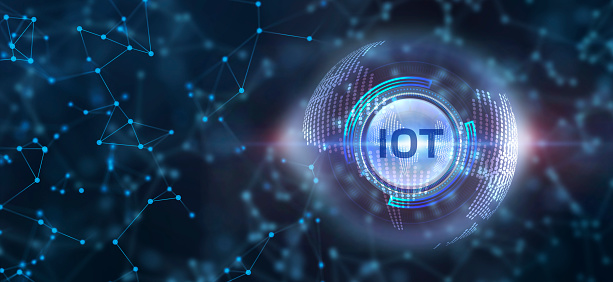

INTRODUCTION
IOT is the emerging field in Internet technology era. It is basically the giant interconnection of objects/devices connected to Internet based on intelligence which is fusing the real and cyber worlds to share and receive
the data. Anything that has the ability to connect to the internet is the part of IOT. It is all done by using sensors, software and actuators which send collected data to Internet where the processing is happening. In this 21st century innovation
in IOT has changed the way of living and become an important part of our life Everything is the part of IOT that can be given an Internet protocol IP address i.e., it can be a vehicle with built-in sensors to give instructions to the driver
to warn him when the tire pressure is low.
| Communication | Control and Automation | Cost Saving |
| Every company has a GPS system to track the devices and collect the information.IOT is playing an important role in every industry i.e., in hospitals there is record of everything from wheelchairs to surgeons and in transportation through IOT shipping details can be tracked. | IOT provides to control the devices i.e., temperature can be controlled through devices. You can easily turn on and off-air conditioners and switch off/on lights. Devices also warn and alerts the person about any anomalies. | The advantage of IOT to companies is that it is money saving as it provides exact and precise information instead of just estimates. |

There are vast applications of IOT which are divided into mainly five categories:
CONSUMER APPLICATION:
SMART HOMES:
The first thing that comes in our mind when we heard about IOT application is Smart homes i.e., home automation concept which includes
security and camera system, switching on /off lights, controlling house temperature so it saves the cost by ensuring and limiting electricity usage and also make people aware of that. This is all done by using smart devices such as
iPhone and also can control by just wearing watches such as Apple watches. Th new advent in home automation is the functions and controlling in houses is done by using string of musical notes which is called as Allen Pan’s Home Automation
system. Homes can also be controlled by using your voice this really helps the people who have some disabilities like sight and physical disability can control their houses by just saying to smart device and can make use of this technology.
So, this technique provides assistance and makes life easier for many people. Go Back
ORGANIZATIONAL APPLICATION
SMART HEALTHCARE
Another extensive application of the IoT is IoMT i.e., Internet of Medical things which turn this medical system into
interactive one. This digitalized healthcare system enables the people to check the available services the health resources. It keeps the record of the reports of patients and analyze the data for researching and monitoring the
disease. The distinctive feature of Iot is Wearable technology. Heartbeat, blood pressure, and glucose level these all can be monitored through wearable devices such as Fitbit wrist watches. The glucose level in the body can be
detected through a glucose sensor made of tiny electrode that is placed under the skin which passes the information through radio frequency to device. The improvement in it is that some hospitals also provide the facility of Smart
beds which record the date of admitting in hospital and schedule the date of leaving by checking the improvement in the patient so there is no need to check the patients manually by nurses. Like in these COVID period this is really
helpful and these smart health care devices also calculates the whole expenditure of treatment. The treatment of physical therapy is also done through these devices in which embedded systems are inserted and special sensors are
placed which connects with the home monitoring systems through artificial intelligence. Smart heart monitors are also very helpful in making cardiac patients’ medication and treatment. This IoMT technique makes the life easier
as patient, doctors and all the medical staff can get access to the patients’ record/data and analyzation becomes easier through it and prevention from diseases also become easier. Thus, IoMT is playing an important part in health
system.Another extensive application of the IoT is IoMT i.e., Internet of Medical things which turn this medical system into interactive one. This digitalized healthcare system enables the people to check the available services
the health resources. It keeps the record of the reports of patients and analyze the data for researching and monitoring the disease. The distinctive feature of Iot is Wearable technology. Heartbeat, blood pressure, and glucose
level these all can be monitored through wearable devices such as Fitbit wrist watches. The glucose level in the body can be detected through a glucose sensor made of tiny electrode that is placed under the skin which passes the
information through radio frequency to device. The improvement in it is that some hospitals also provide the facility of Smart beds which record the date of admitting in hospital and schedule the date of leaving by checking the
improvement in the patient so there is no need to check the patients manually by nurses. Like in these COVID period this is really helpful and these smart health care devices also calculates the whole expenditure of treatment.
The treatment of physical therapy is also done through these devices in which embedded systems are inserted and special sensors are placed which connects with the home monitoring systems through artificial intelligence. Smart heart
monitors are also very helpful in making cardiac patients’ medication and treatment. This IoMT technique makes the life easier as patient, doctors and all the medical staff can get access to the patients’ record/data and analyzation
becomes easier through it and prevention from diseases also become easier. Thus, IoMT is playing an important part in health system.
TRANSPORT SYSTEM
IoT is playing a fundamental role in transportation system. Inter and intra communication between vehicles and people can be done through these Iot devices. Many countries now a days using
smart city concept which is just because of IoT as engineers and government can check and make analysis that which factors are affecting a city like bad air and drinking water quality and pollution causing factors so that the government
can take steps for city planning which includes water, air, waste control and emergency systems in required cities. Smart traffic control, parking systems, product packaging and shipping i.e., logistics, electronic toll system
so to avoid traffic and many other systems can be managed precisely through these smart devices. In San Francisco, smart traffic system is used as they analyze through the devices that in which parts of the city is the traffic
blockage and for what purpose so they resolve it by installing the sensors at the parking places and these sensors exchange the data of vehicle parking occupancy to cloud as it gives the instructions to the drivers to move to other
place and through shortest route and also a person can park his car by just using the smart device and control its movement. In this way it minimizes the number of accidents and safety of vehicles is kept with the security systems
embedded in these devices. It also warns a person through the smart device whenever a person tries to unlock the car. Go Back
Types of IoT in Wireless Networking
CELLULAR NETWORK
This is the large networking that uses mobile networks like smartphones to exchange the
information. Basically, these devices were made for power consuming devices like ovens, refrigerators, phones etc. but with the passage of time it spreads widely and become useful for large area networks in less cost and more efficiently.
LOCAL AND PERSONAL AREA NETWORKS
Wi-Fi and Bluetooth are the IoT connectivity solutions which are wireless LAN/PAN technologies and are costly. Wi-Fi uses more energy while Bluetooth uses less power but it is quite
slow in sending data while Wi-Fi is quick way to transfer data.
LOW POWER WIDE AREA NETWORK
For increasing the range than Wi-Fi and Bluetooth there is a solution i.e., Lora WAN long range area network devices are
used that has long life battery and less cost. So, it is useful in exchange of information packets over large area with less energy consumption.
MESH NETWORKS
In mesh networking all sensor nodes and data packets
coordinate in mesh networks as compared to star network in which all data packets are connected to a main hub. These are very short range and are costly as many sensors are required i.e., Zigbee is one of the mesh networks and it is
the fastest way of sending data by using shortest routes. Go Back
DRAWBACKS
As there is a good side of the coin there are also certain limitations and pitfalls of IoT.
PRIVACY
Privacy is one of the major concerns of todays’ technology.
As data is collected through IoT devices so everyone wants his personal information is to be kept safe and sound and is not leaked publicly how much a person consumes on his food should not be shared on his work place.
SECURITY
Security
and safety are also one of the primary issues of IoT as if the software programs are hacked then the chances of misuse of personal information increases. So, the main barrier in adopting this technology is safety, security and privacy.
COMPLEXITY
Due to large number of sensors, actuators, other hardware components smart devices this large mesh of network creates complexity so it becomes difficult and more complex to control such systems and also
some software errors may occur due to which a message is sent again and again and sometimes it may happen if some thing is consumed and it is required so a message is sent to both people and you get the thing double times so this will
result in waste of your money.
CONCLUSION
IoT is one of the best technology techniques so we cannot disregard its benefits as it is cost saving, time saving, work is done more efficiently and precisely than the traditional
way of doing the work in which work is done through only guesses and predictions. Everything has its own pros and cons and with the passage of time we can get control over these disadvantages and the day is not far from us when IoT
spread widely and use commonly in our homes and in each industry of world from houses to business it becomes part of each and every thing. Go Back